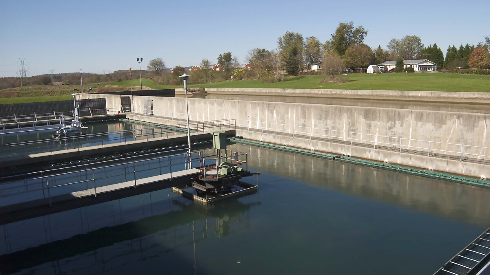

# Load libraries
library(dplyr)
library(ggplot2)
library(readr)
# Prepare official CSV resource
source("datasets/prelevements-eau-autorises/preparation.R")
# Import prepared data
prelevements <- read_csv(
"data/processed/prelevements-eau-autorises/prelevements_eau_autorises.csv",
show_col_types = FALSE
)
# Aggregate by water provenance
resume_provenance <- prelevements |>
group_by(provenance_eau) |>
summarise(
sites = n(),
volume_total_m3_j = sum(volume_autorise_m3_j, na.rm = TRUE),
.groups = "drop"
) |>
arrange(desc(volume_total_m3_j))
resume_provenance
# Plot authorized volumes
ggplot(resume_provenance, aes(x = reorder(provenance_eau, volume_total_m3_j), y = volume_total_m3_j)) +
geom_col(fill = "#325EA8") +
coord_flip() +
labs(
x = "Provenance de l'eau",
y = "Volume maximal autorisé total (m3/j)",
title = "Volumes autorisés par provenance de l'eau",
subtitle = "Il s'agit de volumes autorisés, pas de volumes réellement prélevés"
)Registre des prélèvements d’eau autorisés
Registre des prélèvements d'eau autorisés
Données Québec / Ministère de l'Environnement, de la Lutte contre les changements climatiques, de la Faune et des Parcs
Site de prélèvement d'eau autorisé actif depuis l'entrée en vigueur du RPEP

TerritoireQuébec
NiveauIntermédiaire
StructureDonnées administratives ponctuelles, tabulaires et spatiales
FormatCSV officiel préparé localement; GeoJSON, GPKG, FGDB, SHP, XLSX, REST, WMS et PDF disponibles
Question de départ
Comparer le nombre de sites et le volume autorisé total par provenance de l'eau.
Potentiel pédagogique27 / 30
eauvolume autorisédonnées administrativesagrégationvaleurs extrêmescartographieunités de mesure
R en action
Aperçu reproductible
Aperçu léger calculé par R à partir des métadonnées vérifiées afin de garder la fiche rapide et stable au rendu.
Code minimal
library(yaml)
metadata <- yaml::read_yaml("datasets/prelevements-eau-autorises/metadata.yml")
data.frame(
champ = c("theme", "territoire", "unite", "niveau"),
valeur = c(metadata$theme, metadata$geography, metadata$unit, metadata$level)
)
Résultats R
Lignes déclarées1 777 sites de prélèvement préparés
Colonnes déclarées16 colonnes préparées; 9 colonnes dans le CSV source
FormatCSV officiel préparé localement; GeoJSON, GPKG, FGDB, SHP, XLSX, REST, WMS et PDF disponibles
AperçuMétadonnées
| champ | valeur |
|---|---|
| theme | Prélèvements d'eau |
| territoire | Québec |
| unite | Site de prélèvement d'eau autor… |
| niveau | Intermédiaire |
| format | CSV officiel préparé localement… |
Lecture statistique
Mini-projets
- Comparer le nombre de sites et le volume autorisé total par provenance de l'eau.
- Cartographier les sites de prélèvement autorisés sans les confondre avec des volumes réellement prélevés.
- Évaluer l'influence des plus grands sites sur les graphiques de volumes.
Activités liées
30-45 minutesVolumes autorisés par provenance de l'eau
Quels types de provenance représentent les plus grands volumes autorisés?
2-3 heuresPortrait spatial des prélèvements d'eau autorisés
Comment décrire les volumes et la localisation des prélèvements d'eau autorisés sans les confondre avec des volumes réels?
Pourquoi ce jeu est intéressant
Ce jeu relie directement statistique descriptive, ressources hydriques et décision administrative. Les variables sont simples à manipuler, mais l’interprétation demande de la rigueur : le volume fourni est un volume maximal autorisé, pas un volume réellement prélevé.
La fiche est donc utile pour enseigner trois gestes essentiels : convertir des unités, agréger par catégorie et communiquer une limite administrative sans l’enterrer à la fin du rapport.
Ce qui a été vérifié
| Élément | Résultat vérifié |
|---|---|
| Paquet CKAN | d9564fe0-6d50-4f89-b12e-47a461e1f68e |
| Source officielle | Données Québec / MELCCFP |
| Ressources dans le paquet | 10 ressources |
| Ressource préparée ici | CSV prelevement_autorise_20250915.csv |
| Version source | 2025-09-15 |
| Licence | Attribution (CC-BY 4.0), selon les métadonnées CKAN consultées le 2026-06-21 |
| Dernière modification du paquet CKAN | 2026-05-05 |
| Table préparée | data/processed/prelevements-eau-autorises/prelevements_eau_autorises.csv |
| Résumés préparés | ressources, valeurs manquantes, provenances, principaux sites et intervenants |
Source et conditions
| Champ | Information |
|---|---|
| Page Données Québec | https://www.donneesquebec.ca/recherche/dataset/prelevements-eau-volumes-autorises-par-melccfp |
| API CKAN | https://www.donneesquebec.ca/recherche/api/3/action/package_show?id=prelevements-eau-volumes-autorises-par-melccfp |
| CSV officiel | https://www.donneesquebec.ca/recherche/dataset/d9564fe0-6d50-4f89-b12e-47a461e1f68e/resource/5c090292-a681-4413-9399-f17bcdf62753/download/prelevement_autorise_20250915.csv |
| PDF de métadonnées | https://www.donneesquebec.ca/recherche/dataset/d9564fe0-6d50-4f89-b12e-47a461e1f68e/resource/24b357f1-fd58-44a7-8cd3-7098645ae907/download/md_prelevementseauautorises.pdf |
| Miroir ouvert.canada.ca | https://open.canada.ca/data/fr/dataset/d9564fe0-6d50-4f89-b12e-47a461e1f68e |
| Territoire | Québec |
| Date d’accès | 2026-06-21 |
| Fréquence | Annuelle selon le miroir ouvert.canada.ca et le PDF de métadonnées |
| Mise en garde officielle | Le PDF de métadonnées indique que cette donnée n’a aucune valeur légale |
Ce que représente une ligne
Une ligne représente un site de prélèvement d’eau autorisé actif depuis l’entrée en vigueur du Règlement sur le prélèvement des eaux et leur protection, le 14 août 2014. Le PDF de métadonnées définit ces sites comme les points d’entrée de l’eau dans une installation aménagée afin d’effectuer un prélèvement d’eau, tant souterrain que de surface.
Une ligne n’est pas un volume consommé, un débit mesuré, une déclaration annuelle, ni un impact environnemental observé.
Variables principales
| Variable préparée | Rôle | Point de vigilance |
|---|---|---|
no_doc |
Numéro du document délivré | Un document peut regrouper plusieurs sites |
site_id |
Identifiant du site dans le fichier | Clé technique |
nombre_sites_document |
Nombre de sites liés au document | Utile pour repérer les documents multi-sites |
nom_intervenant |
Destinataire de l’autorisation | Les noms peuvent demander une normalisation |
volume_autorise_l_j |
Volume maximal autorisé en litres par jour | Ce n’est pas un volume réellement prélevé |
volume_autorise_m3_j |
Conversion en mètres cubes par jour | Plus lisible pour les graphiques |
precision_volume |
Condition ou précision relative au volume | Très souvent manquante |
provenance_eau |
Souterraine, surface ou activités de dénoyage | Variable principale d’agrégation |
longitude, latitude |
Coordonnées des sites | Toutes les lignes préparées ont des coordonnées |
Taille et résultats R vérifiés
| Indicateur | Valeur |
|---|---|
| Sites préparés | 1 777 |
| Colonnes préparées | 16 |
| Colonnes dans le CSV source | 9 |
| Documents distincts | 1 021 |
| Intervenants distincts | 827 |
| Sites avec coordonnées | 1 777 |
| Sites avec volume manquant | 19 |
| Sites avec précision textuelle sur le volume | 130 |
| Volume autorisé total | 4 670 107 m3/j |
| Volume autorisé médian | 109,22 m3/j |
| Volume autorisé maximal | 499 000 m3/j |
Provenance de l’eau
| Provenance | Sites | Documents | Intervenants | Volumes manquants | Volume total autorisé | Volume médian autorisé | Volume maximal autorisé |
|---|---|---|---|---|---|---|---|
| Surface | 346 | 246 | 210 | 4 | 3 485 318 m3/j | 1 058,8 m3/j | 499 000 m3/j |
| Souterraine | 1 424 | 816 | 673 | 11 | 1 166 715 m3/j | 72,0 m3/j | 102 600 m3/j |
| Activités de dénoyage | 7 | 5 | 5 | 4 | 18 074 m3/j | 3 800,0 m3/j | 13 600 m3/j |
La lecture pédagogique importante est que le nombre de sites et le volume total ne racontent pas la même histoire. Les sites souterrains sont les plus nombreux, alors que le volume total autorisé est dominé par les prélèvements de surface.
Valeurs manquantes
| Variable | Valeurs manquantes | Pourcentage |
|---|---|---|
precision_volume |
1 647 | 92,68 % |
volume_autorise_l_j |
19 | 1,07 % |
volume_autorise_m3_j |
19 | 1,07 % |
L’absence de précision textuelle ne veut pas dire absence de condition administrative. Pour une analyse publique, il faut retourner aux documents et aux métadonnées.
Principaux sites
| Intervenant | Provenance | Volume autorisé |
|---|---|---|
| VILLE DE LONGUEUIL | Surface | 499 000 m3/j |
| VILLE DE LONGUEUIL | Surface | 499 000 m3/j |
| SOCIÉTÉ DU PARC INDUSTRIEL ET PORTUAIRE DE BÉCANCOUR | Surface | 153 620 m3/j |
| VILLE DE LONGUEUIL | Surface | 152 400 m3/j |
| VILLE DE LONGUEUIL | Surface | 152 400 m3/j |
| La cannebergière Nathaniel S.E.N.C. | Surface | 120 000 m3/j |
| La cannebergière Nathaniel S.E.N.C. | Surface | 106 000 m3/j |
| Canadian Malartic GP | Souterraine | 102 600 m3/j |
| Canadian Malartic GP | Souterraine | 91 200 m3/j |
| COMMANDITÉ STADACONA WB LTÉE | Surface | 73 630 m3/j |
Ces valeurs justifient une discussion sur les valeurs extrêmes. Un graphique brut peut être dominé par quelques sites.
Lecture statistique
Une analyse prudente suit cet ordre :
- vérifier que l’unité est le site autorisé;
- convertir les litres par jour en mètres cubes par jour;
- séparer nombre de sites et volumes autorisés;
- repérer les volumes manquants et les précisions textuelles;
- distinguer volume autorisé et volume réel prélevé;
- citer la mise en garde officielle sur la valeur légale des données.
Les données permettent de décrire les autorisations actives présentes dans la source. Elles ne permettent pas, seules, de mesurer la pression réelle sur l’eau, l’utilisation annuelle ou l’impact hydrologique.
Concepts enseignables
- volume maximal autorisé;
- conversion d’unités;
- données administratives;
- agrégation par catégorie;
- valeurs extrêmes;
- carte de points;
- biais d’interprétation;
- communication prudente.
Score zéro déchet
| Dimension | Score | Justification |
|---|---|---|
| Contexte québécois | 3 | Données officielles sur les prélèvements d’eau au Québec |
| Accessibilité pédagogique | 3 | Variables concrètes et graphiques directs |
| Qualité documentaire | 3 | Page, CSV, PDF de métadonnées et formats spatiaux |
| Potentiel de nettoyage | 3 | Volumes, unités, précisions, grands sites et noms |
| Potentiel de visualisation | 3 | Barres, distributions, cartes et effets d’échelle |
| Potentiel de statistique descriptive | 3 | Agrégations et comparaisons très naturelles |
| Potentiel d’inférence | 1 | Non adapté à l’inférence sans protocole complémentaire |
| Potentiel de modélisation | 2 | Modélisation descriptive possible avec données territoriales |
| Potentiel éthique | 3 | Ressource hydrique, gouvernance et communication publique |
| Réutilisabilité | 3 | Utile en visualisation, données ouvertes et politiques publiques |
Total : 27 sur 30.
Activité courte
En 30 à 45 minutes, comparer les volumes autorisés par provenance de l’eau, puis expliquer pourquoi ce ne sont pas des volumes réellement prélevés.
Activité longue
En 2 à 3 heures, produire un portrait descriptif avec agrégations, carte, valeurs extrêmes, valeurs manquantes et limites administratives.
Code R minimal
À exécuter depuis la racine du projet.
Limites et précautions
- Le champ
volume_autorise_l_jreprésente un volume maximal autorisé en litres par jour. - Les données ne donnent pas les volumes réellement prélevés.
- Le PDF de métadonnées indique que cette donnée n’a aucune valeur légale.
- Les autorisations antérieures au cadre décrit dans la source ne sont pas nécessairement incluses.
- Les grands volumes dominent fortement plusieurs graphiques.
- Les coordonnées peuvent provenir d’origines diverses selon le PDF de métadonnées.
Extensions
- Comparer les résultats avec et sans les dix plus grands sites.
- Produire une carte des sites avec une échelle logarithmique du volume.
- Grouper par intervenant et discuter des documents multi-sites.
- Joindre les sites à une région administrative ou un bassin versant.
- Rédiger une note publique qui distingue volume autorisé, volume réel et valeur légale.
Références utilisées
- Données Québec. 2026. Prélèvements d’eau et volumes autorisés par le MELCCFP. https://www.donneesquebec.ca/recherche/dataset/prelevements-eau-volumes-autorises-par-melccfp
- MELCCFP. 2025. Métadonnées, prélèvements d’eau et volumes autorisés depuis l’entrée en vigueur du RPEP. https://www.donneesquebec.ca/recherche/dataset/d9564fe0-6d50-4f89-b12e-47a461e1f68e/resource/24b357f1-fd58-44a7-8cd3-7098645ae907/download/md_prelevementseauautorises.pdf
- Gouvernement du Canada. 2026. Prélèvements d’eau et volumes autorisés par le MELCCFP, miroir ouvert.canada.ca. https://open.canada.ca/data/fr/dataset/d9564fe0-6d50-4f89-b12e-47a461e1f68e